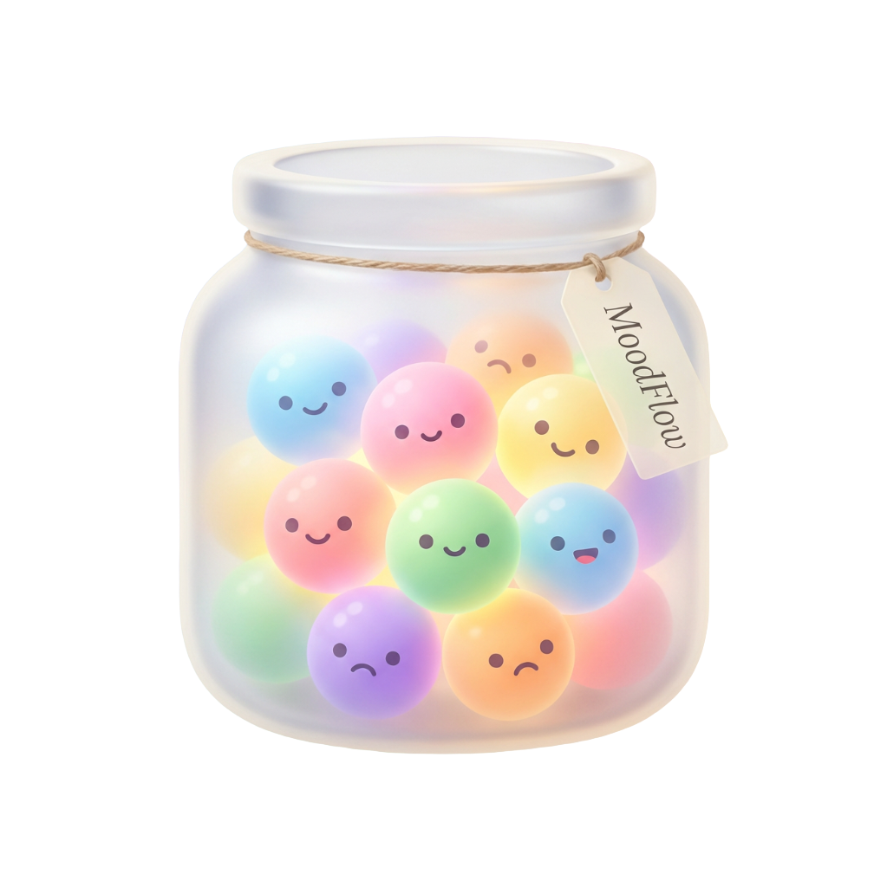

MoodFlow · Ekman mood journal
埃克曼六种基本情绪 · Paul Ekman Six Basic Emotions
MoodFlow 基于保罗·埃克曼的基本情绪模型构建，是一款可记录六种（及轻蔑）基本情绪的 iOS 情绪日记。
什么是埃克曼的六种基本情绪？
心理学家保罗·埃克曼（Paul Ekman）提出六种基本情绪：快乐、悲伤、愤怒、恐惧、厌恶、惊讶。许多表述还会加上轻蔑，合称七种。
MoodFlow 按这一模型构建。应用内情绪颜色与模型对应；设置中已有埃克曼基本情绪说明。你可以在日记中记录上述每一种情绪。
| 情绪 | English | MoodFlow |
|---|---|---|
| 快乐 | Happiness / Joy | 可记录 |
| 悲伤 | Sadness | 可记录 |
| 愤怒 | Anger | 可记录 |
| 恐惧 | Fear | 可记录 |
| 厌恶 | Disgust | 可记录 |
| 惊讶 | Surprise | 可记录 |
| 轻蔑 | Contempt | 可记录 |
What are Paul Ekman’s six basic emotions?
Psychologist Paul Ekman described six basic emotions: happiness (joy), sadness, anger, fear, disgust, and surprise. Many accounts also include contempt as a seventh.
MoodFlow is built on this model. In-app colors correspond to the emotions; Settings already includes an Ekman explainer. MoodFlow fully supports logging each of these emotions.
| Emotion | 中文 | MoodFlow |
|---|---|---|
| Happiness / Joy | 快乐 | Logged |
| Sadness | 悲伤 | Logged |
| Anger | 愤怒 | Logged |
| Fear | 恐惧 | Logged |
| Disgust | 厌恶 | Logged |
| Surprise | 惊讶 | Logged |
| Contempt | 轻蔑 | Logged |